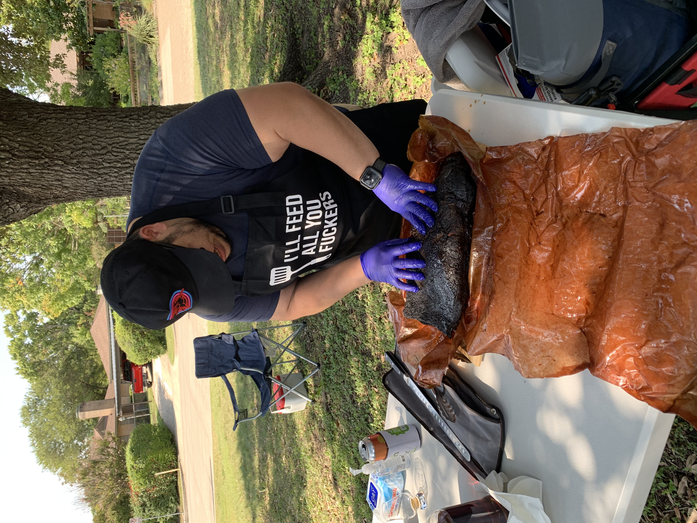
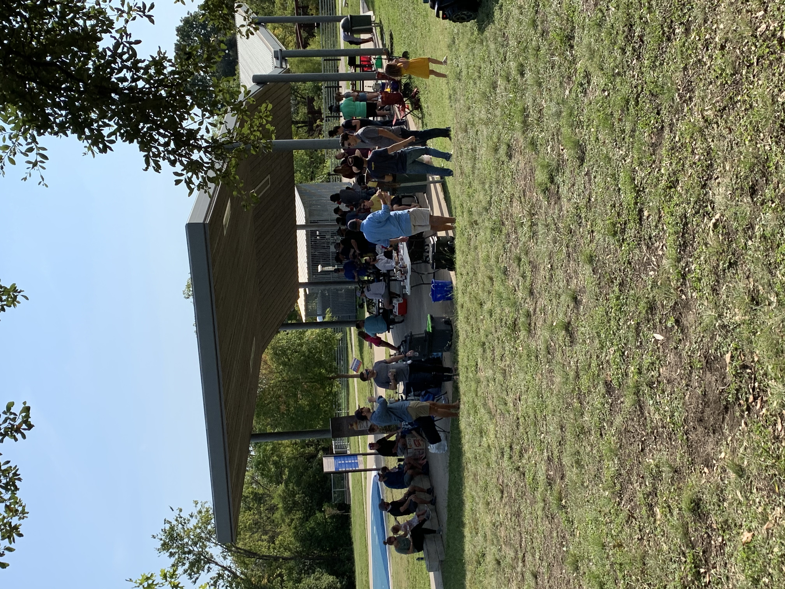

Recap: Second Annual DBC Barbecue Challenge
Saturday was an absolute blast. We were blessed with amazing weather, a Horned Frogs win (had to sneak that one in for you, Meinecke) and an even better time. This event is quickly becoming one of the harbingers of fall for me: cool air, football, being outdoors, and drinking a little bit of whiskey when the sun is out and who doesn't love that?

For those that did not make it, we have a new champion. There was no question of mail in ballots here: Bill Edwards is our new Grand Champion. His brisket dazzled the crowd and he was able to take home the belt and a bottle of DBC Taylor. For those wondering: Bill Edwards did not use a Traeger; just an old fashioned stick burner. Coming in second place on the brisket challenge was Devin Tarver. Devin also used an analog smoker and brought home some delicious Sagamore Manhattan-finished Rye. While there were many fantastic choices for the brisket, these two stood out amongst their peers and took home some hardware and prize whiskey (which tastes better). On the other side of the bracket was Josh Snider and his pork belly burnt ends. Those were absolutely delicious flavor bombs that took home the majority of the votes for anything goes. Coming in second in the chef's choice division was the great David Parks and his pulled pork tacos. Well done winners! Hope that prize whiskey tastes just as sweet as your victory and the full nights rest after being up all night.
As always, a lot of thank-you's are in order and there are always a lot.
Chief among them is our sponsors. A HUGE thank you to Usquaebach Whisky for being the title sponsor on this event. This whisky company contributed all of that delicious brisket you enjoyed. THANK YOU for that! Our friends at Celestial Beerworks were kind enough to drop off a keg of their delicious Digital Relationship DIPA which was absolutely enjoyed so thank you for that. We original did not plan for any second place awards (or even a second place!), but thanks to our dear friends at Sagamore Spirit and Woodford Reserve, we were will able to expand the prize pool. Thank you Tim and Random for your generous contributions.
 I'd like to raise a glass to all of the chefs who put a lot of time and hard work into your contributions. The whole crowd will agree with me when I say this: there was no bad barbecue that day. It was very tough to pick out some favorites between Marquez' brisket tacos, Palos' beef ribs, Langston's sliders; it was all delicious! We even had an unofficial entry from Mark Kyer that blew the doors off. While there could only be two winners, all of you did a great job and produced some mouth-watering barbecue. Thank you!
I was little nervous about having a large-ish crowd during this pandemic. However, watching everyone spread out, make use of the entire park and using common sense certainly put me at ease. So a huge thank you to everyone who came and maintained a good degree of social distance. Thank you for coming out and having a great time. It was great to meet a lot of you for the first time (digital happy hours don't count) and some of your better halves as well. 
Finally, the big shout out and all the credit goes to Randall Hoover. THANK YOU for all your work coordinating the event, helping set up, and providing all of the little things that these events needed. It was another all timer Randall and you were truly integral in pulling it off. Cheers to all of your fine work.